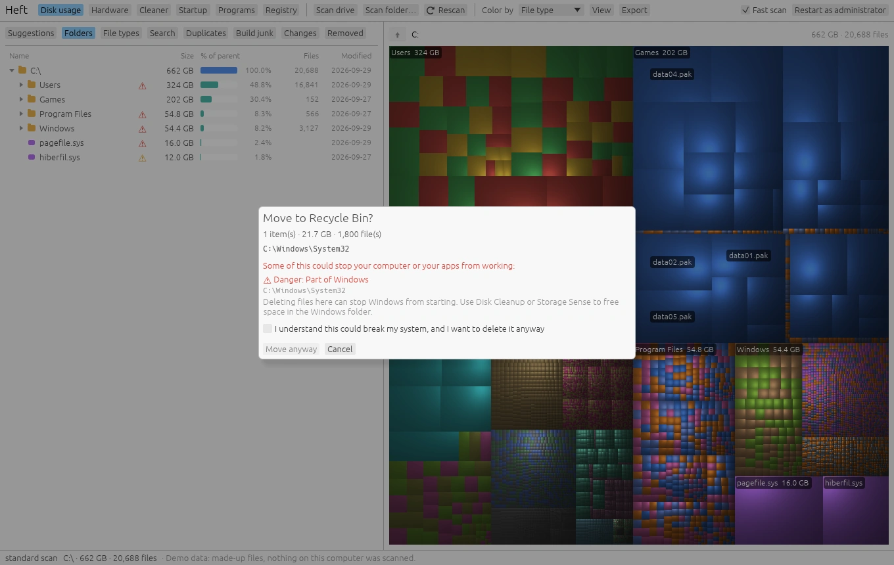

See where your disk space went, and get it back safely
Heft is a free, open-source disk usage analyzer and PC cleaner. It maps every file on your drive, points out what you probably don't need, and explains everything before it removes anything.

Everything in one place
A disk map, cleanup suggestions, a junk cleaner and a hardware monitor, in one small program with no installer.
Treemap and folder tree
Spot the biggest folders at a glance. Zoom in, color by type or age, and see what grew since your last scan.

Suggestions
Old installers, forgotten build folders, games you stopped playing, crash dumps. Each one says why it's there.

Search and file types
Find the largest files, everything over 1 GB that hasn't changed in a year, or every .iso on the drive.

Cleaner
Caches and temporary files from a fixed list of known locations. See exactly which files go before you press Clean.

Hardware monitor
Temperatures, load, power and fans in a live dashboard, plus every sensor in one table with history charts.

Free space without deleting
Replace duplicates with links, compress games you rarely update, or move a folder to another drive.
Also: build junk, duplicates, free space alerts, and on Windows, startup programs, uninstalling and updates, and registry issues.
Careful by design
Cleanup tools have a reputation for deleting the wrong thing. Heft tries hard to be the one you can trust.
- Explains what a file or folder is, in plain language, before you can delete it.
- Sends files to the Recycle Bin or Trash, and keeps a list so you can restore them.
- Asks twice before removing anything that could stop your computer from starting.
- Cleans only from a fixed list of known locations, and shows the exact files first.
- Backs up every registry change, and says so when a cleanup won't make your PC faster.
- Never installs drivers and never sends your data anywhere.

Fast, and counted correctly
Run as administrator on an NTFS drive and Heft reads the master file table directly instead of opening every folder.
to scan a 1.5 TB drive with 2.7 million files, compared to about 30 seconds for a regular folder scan.
that a plain folder scan over-counted on the same drive, mostly hard links in the Windows component store. Heft counts each file once.
downloaded from OneDrive, Dropbox or iCloud. Online-only files count as 0 on disk and are never read.
After a fast scan, Rescan reads only what the NTFS change journal says has changed.
Runs on
Heft is built and tested on Windows. The macOS and Linux builds pass the test suite on every change but haven't been tried on real hardware yet, so reports are welcome.
Everything: disk usage with the fast MFT scan, Cleaner, hardware monitor, startup programs, uninstalling and updates, registry issues.
Disk usage and the Cleaner, for Apple Silicon and Intel Macs.
Disk usage, the Cleaner and the hardware monitor.
Find your missing gigabytes
Heft is a single program with no installer. Download it, open it, pick a drive.